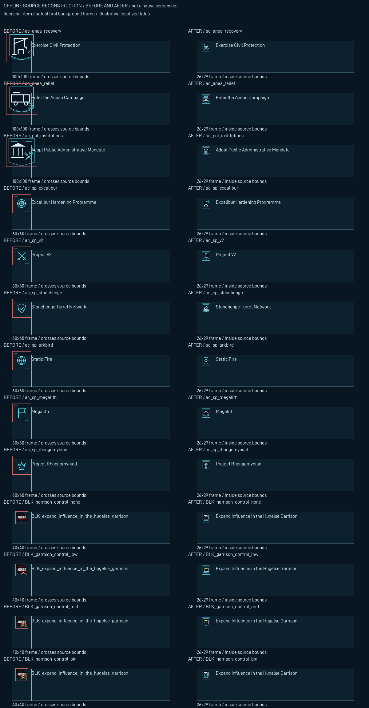
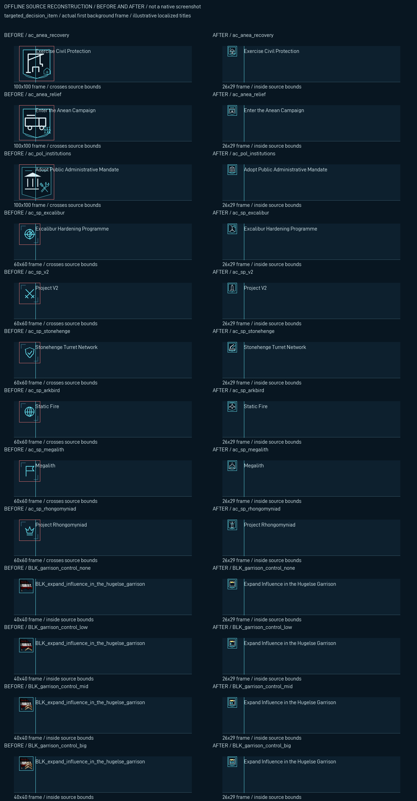
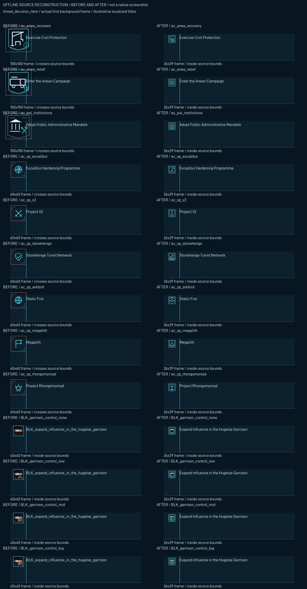

Actual shipped controls, font atlas, first background frame, localized sample titles and original DDS. Red/cyan bounding guides are review annotations, never delivered artwork. This is not a native screenshot.
923active row variants inspected; 73previously oversized active variants; zero current source-bound failures.


